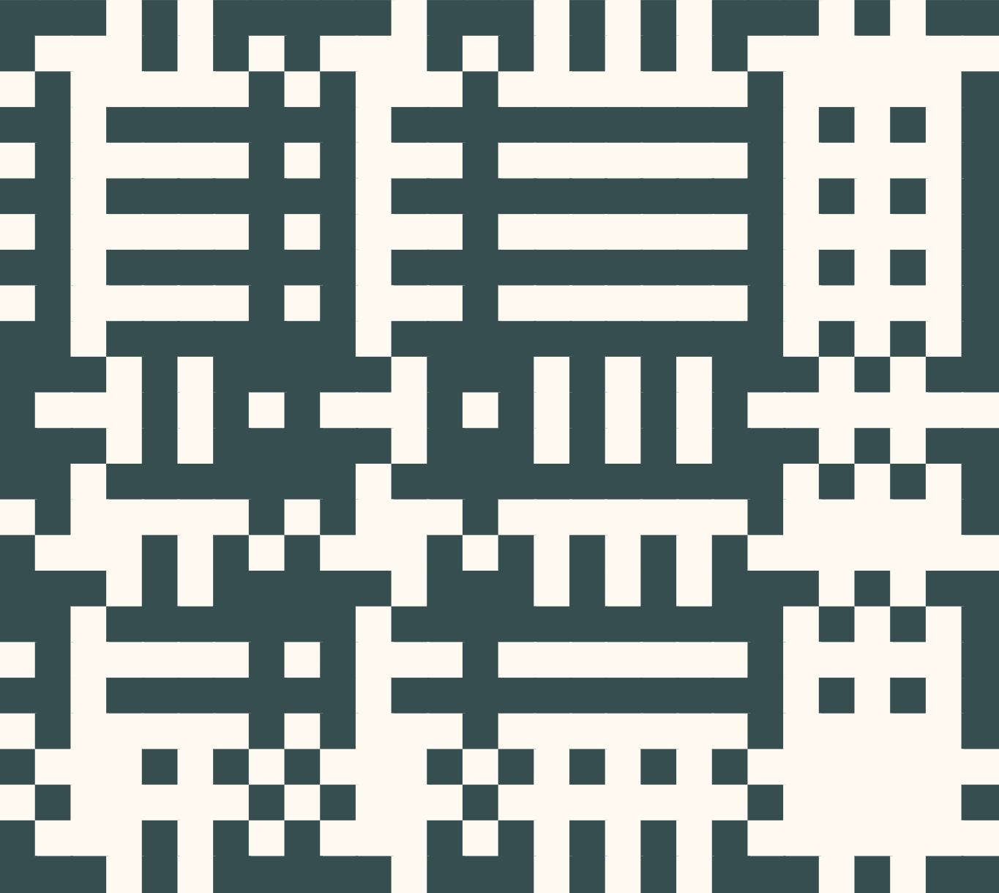

Shadow Weaving
Shadow weaving is a web tool made to experiment with color and weave structure.
Each warp and weft thread can be toggled on or off to determine its color, and each intersection of threads can be toggled to change which thread is on top. Intersections of threads of different colors can be either color depending on this structure.
I am interested in the way the structure of a weave can determine color, and how that can be manipulated into maze-like patterns.
I am exploring this technique using paper strips as well, deviating from a plain weave in order to change the direction of a stripe and changing the overall color pattern.
This project was inspired by Tauba Auerbach's work after seeing their show at the SFMoMA in 2022, which featured shadow weaving as a technique.